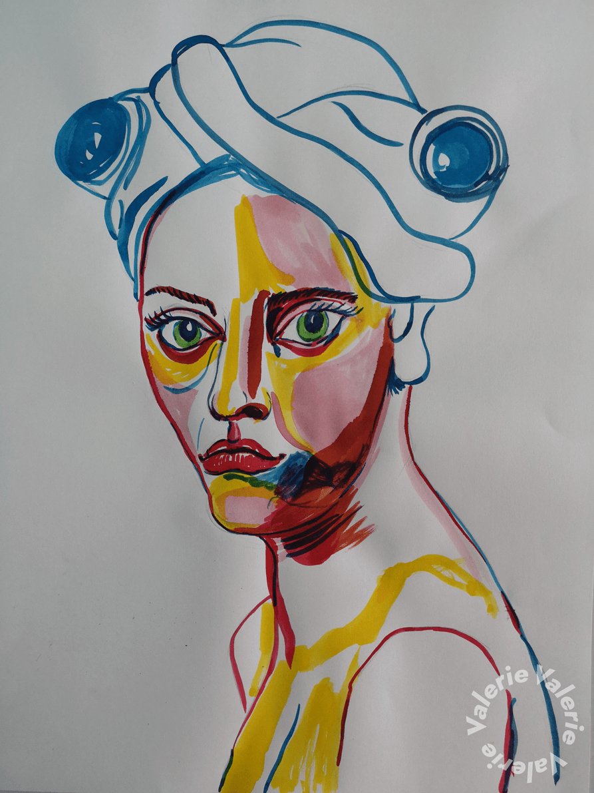
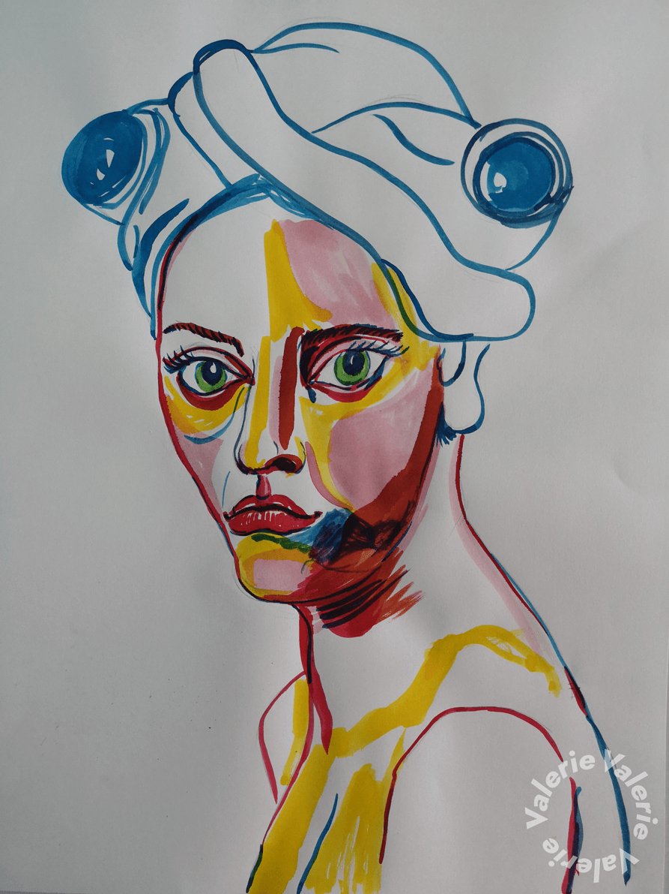

Haar als statussymbool
Bij primitieve volkeren wordt menselijk haar reeds lang gebruikt als sierelement. Zo zijn de Naga, een groep die leeft in Noordoost-India en Noordwest Birma, nog steeds actieve kannibalen. Ze maken gebruik van tatoeages om zichzelf te beschermen tegen andere groepen en vreemden. Ze Vrouwen hebben méér tatoeages dan mannen omdat zij kwetsbaarder zijn. Maar in de winter dragen zij kledij om zich te beschermen voor de kou en zijn de tatoeages niet meer zichtbaar zodat ze hun functie verliezen. Daarom worden gelijkaardige symbolen verweven in de kledij en hoofddeksels, waarvan sommigen uitsluitend met mensenhaar zijn geknoopt. Mensenhaar als hoogste statussymbool.
Ga verder